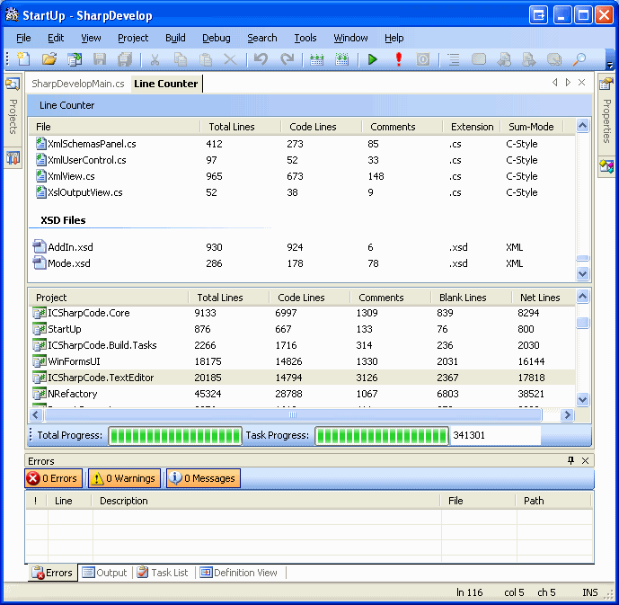
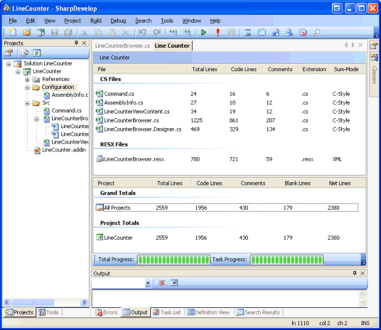

<AddIn name = "LineCounter"
author = "Daniel Grunwald"
url = "http://www.codeproject.com/useritems/LineCounterSDAddIn.asp"
description = "Advanced line counter AddIn">
<Manifest>
<Identity>Grunwald.LineCounter</Identity>
<Dependency addin="SharpDevelop" version="2.0"/>
</Manifest>
<Runtime>
<Import assembly = "LineCounter.dll"/>
</Runtime>
<Path name = "/Workspace/Tools">
<!-- disable our menu item if condition "SolutionOpen" is not met -->
<Condition name="SolutionOpen" action = "disable">
<MenuItem id = "LineCounterCommand1"
label = "Show Line Counter"
class = "Grunwald.LineCounter.ToolCommand1"/>
</Condition>
</Path>
</AddIn>
Our menu item uses the "class" attribute. When the menu item is
clicked, SharpDevelop will create an instance of this class and call its Run()
method. This class is defined in the file Command.cs. The example code from the
template accesses the currently opened text editor and reverses the letters in
the currently selected text. We are not interested in accessing the text editor,
so we can delete the content of the Run() method and start writing our own.
public override void Run()
{
WorkbenchSingleton.Workbench.ShowView(new LineCounterViewContent());
}
Now create the new class named LineCounterViewContent. Let it derive from
ICSharpCode.SharpDevelop.Gui.AbstractViewContent to get default implementations
for most of the IViewContent members.
public class LineCounterViewContent : AbstractViewContent
{
LineCounterBrowser browser = new LineCounterBrowser();
public override Control Control {
get { return browser; }
}
public LineCounterViewContent() {
this.TitleName = "Line Counter";
}
}
using ICSharpCode.SharpDevelop.Project;Then remove the variable and property referencing the EnvDTE object.
Solution solution = ProjectService.OpenSolution;
if (solution != null) // OpenSolution is null when no solution is opened
{
FileInfo fiSolution = new FileInfo(solution.FileName);
SharpDevelop doesn't need "plural" classes like "Projects", but
uses the standard .NET collection classes. Unlike Visual Studio,
solution.Projects returns all projects; including those in solution folders.
It's implemented as iterator (with yield return), that's why you don't have
something simple as solution.Projects.Count. As I cannot really imagine
solutions with thousands of projects, we can just copy the values returned by
the iterator into a list to have a normal collection to work with. List<IProject> projects = new List<IProject>(solution.Projects);
tsprgTotal.Maximum = projects.Count;
tsprgTask.Value = 0;
foreach (IProject fiProject in projects) {
As you might guess, IProject is the interface all projects
implement. The actual object type depends on the project type - every language
binding comes with its own project class (but SharpDevelop contains the classes
AbstractProject and MSBuildProject they can inherit most functionality from). foreach (IProject fiProject in projects) {
tsprgTotal.PerformStep();
string projName, lang;
if (fiProject.FileName.IndexOf("://") != -1)
{
projName = fiProject.FileName; // this is a web project
lang = "{00000001-0000-0000-0000-000000000000}";
} else {
projName = fiProject.Name;
lang = fiProject.TypeGuid;
}
int iconIndex;
m_projIconMappings.TryGetValue(lang, out iconIndex); // default icon 0
summary = new LineCountSummary(projName, iconIndex);
m_summaryList.Add(summary);
tsprgTask.Maximum = 0;
tsprgTotal.Value = 0;
ScanProjectItems(fiProject.Items, summary);
}
ScanProjectItems is the next method we'll look at. ProjectItems becomes
List<ProjectItem>. You'll also need to change the summary since
SharpDevelop stores all project items in this collection - no need to use
recursion to get Designer.cs files. In the SharpDevelop model, every project
item is exactly one file. This simplifies the method greatly:private void ScanProjectItems(List<ProjectItem> projectItems, LineCountSummary summary)
{
tsprgTask.Maximum += projectItems.Count;
foreach (ProjectItem projectItem in projectItems)
{
tsprgTask.PerformStep();
if (!(projectItem is FileProjectItem)) {
// Skip references and other special MSBuild things
continue;
}
string projectFile = projectItem.FileName;
if (!Directory.Exists(projectFile))
{
int iconIndex = 0;
m_fileIconMappings.TryGetValue(Path.GetExtension(projectFile), out iconIndex);
summary.FileLineCountInfo.Add(new LineCountInfo(projectFile, iconIndex, summary));
}
}
}
Now try to compile again. The only thing missing is
"CodeModelLanguageConstants", a class containing the GUIDs for C#, VB and
(M)C++. SharpDevelop supports C#, VB, Boo and MSIL projects; this is not
matching the icons we imported from the Visual Studio AddIn. We'll look for a
way to get icons directly from SharpDevelop soon; for now just hard-code the
values for C# and VB:// Map project types to icons for use in the projects list
m_projIconMappings = new Dictionary<string, int>();
m_projIconMappings.Add("{00000000-0000-0000-0000-000000000000}", 0);
m_projIconMappings.Add("{FAE04EC0-301F-11D3-BF4B-00C04F79EFBC}", 1); // C#
m_projIconMappings.Add("{F184B08F-C81C-45F6-A57F-5ABD9991F28F}", 2); // VB
m_projIconMappings.Add("{00000001-0000-0000-0000-000000000000}", 5);
This fixes all compile errors. And if you test it, you'll find that it even runs correctly! :-)
Although the extension process is very different in SharpDevelop and Visual Studio; the API is quite similar - after all, both are modelling MSBuild solutions and a similar feature set. I hope this shows you that porting AddIns from Visual Studio to SharpDevelop isn't very hard and we would like to see more SharpDevelop AddIns in the future.
Here an image showing the AddIn counting itself:

public class ImageListHelper
{
ImageList imageList;
Dictionary<string, int> dict = new Dictionary<string, int>();
public ImageListHelper(ImageList imageList)
{
if (imageList == null)
throw new ArgumentNullException("imageList");
this.imageList = imageList;
}
public int GetIndex(string imageName)
{
int index;
if (!dict.TryGetValue(imageName, out index)) {
index = imageList.Images.Count;
imageList.Images.Add(IconService.GetBitmap(imageName));
dict[imageName] = index;
}
return index;
}
}
We
will use two instances of this class to control the two image lists
imgProjectTypes and imgFileTypes.iconIndex = projectImageListHelper.GetIndex(IconService.GetImageForProjectType(fiProject.Language));Do the same for the file icons in ScanProjectItems():
iconIndex = fileImageListHelper.GetIndex(IconService.GetImageForFile(projectFile));
Now the AddIn is using the icons shipping with SharpDevelop and will
automatically use the icons of other languages added to SharpDevelop.
public interface ICountingAlgorithm
{
void CountLines(LineCountInfo info);
}
public class CountingAlgorithmGeneric : ICountingAlgorithm {
public void CountLines(LineCountInfo info) {
LineCounterBrowser.CountLinesGeneric(info);
}
}
public class CountingAlgorithmCStyle : ICountingAlgorithm {
public void CountLines(LineCountInfo info) {
LineCounterBrowser.CountLinesCStyle(info);
}
}
public class CountingAlgorithmVBStyle : ICountingAlgorithm {
public void CountLines(LineCountInfo info) {
LineCounterBrowser.CountLinesVBStyle(info);
}
}
public class CountingAlgorithmXmlStyle : ICountingAlgorithm {
public void CountLines(LineCountInfo info) {
LineCounterBrowser.CountLinesXMLStyle(info);
}
}
The Count* methods in LineCounterBrowser have been changed from
"private" to "internal static".<Path name = "/AddIns/LineCounter/CountingAlgorithms">
<LineCountingAlgorithm
id = "Generic"
extensions = ".txt;.res;.sql;.cd"
class = "LineCounterAddin.CountingAlgorithmGeneric" />
<LineCountingAlgorithm
id = "CStyle"
extensions = ".cs;.vj;.js;.cpp;.cc;.cxx;.c;.hpp;.hh;.hxx;.h;.idl;.odl;.css"
class = "LineCounterAddin.CountingAlgorithmCStyle" />
<LineCountingAlgorithm
id = "VBStyle"
extensions = ".vb;.vbs"
class = "LineCounterAddin.CountingAlgorithmVBStyle" />
<LineCountingAlgorithm
id = "XmlStyle"
extensions = ".xml;.xsl;.xslt;.xsd;.config;.resx;.aspx;.ascx;.ashx;.asmx;.asax;.html;.html"
class = "LineCounterAddin.CountingAlgorithmXmlStyle" />
</Path>
Because we are using custom attributes, we are using a new codon
name "LineCountingAlgorithm". Don't be irritated that it's not defined in the
XML schema for .addin files - we are creating a new possible codon name here;
the XML schema is just for code completion when editing the .addin file.<Import assembly = "LineCounter.dll">
<Doozer name="LineCountingAlgorithm" class="LineCounterAddin.CountingAlgorithmDoozer"/>
</Import>
The CountingAlgorithmDoozer class has to implement the
ICSharpCode.Core.IDoozer interface:public class CountingAlgorithmDoozer : IDoozer
{
public bool HandleConditions {
get {
// our doozer cannot handle conditions, let SharpDevelop
// do that for us
return false;
}
}
public object BuildItem(object caller, Codon codon, System.Collections.ArrayList subItems)
{
return new CountingAlgorithmDescriptor(codon.AddIn,
codon.Properties["extensions"],
codon.Properties["class"]);
}
}
This means our doozer will always build objects of the type
CountingAlgorithmDescriptor. Let's define that class:public class CountingAlgorithmDescriptor
{
AddIn addIn;
string[] extensions;
string className;
public CountingAlgorithmDescriptor(AddIn addIn, string extensions, string className)
{
this.addIn = addIn;
this.extensions = extensions.ToLowerInvariant().Split(';');
this.className = className;
}
public bool CanCountLines(LineCountInfo info)
{
return (Array.IndexOf(extensions, info.FileType.ToLowerInvariant()) >= 0);
}
ICountingAlgorithm cachedAlgorithm;
public ICountingAlgorithm GetAlgorithm()
{
if (cachedAlgorithm == null) {
cachedAlgorithm = (ICountingAlgorithm)addIn.CreateObject(className);
}
return cachedAlgorithm;
}
}
Now the LineCounterBrowser code has to be changed to use the code we just wrote.
We will need a member variable storing the list of existing counting algorithms:List<CountingAlgorithmDescriptor> countingAlgorithms;Initialising this list in the constructor is easy:
countingAlgorithms = AddInTree.BuildItems<CountingAlgorithmDescriptor>
("/AddIns/LineCounter/CountingAlgorithms", this);
// Iterate through algorithms to fill list of known countable types
foreach (CountingAlgorithmDescriptor desc in countingAlgorithms) {
m_countableTypes.AddRange(desc.extensions);
}
And finally, replace the usage of m_countAlgorithms in the inner try-catch block in SumSolution() with this code:
foreach (CountingAlgorithmDescriptor desc in countingAlgorithms) {
if (desc.CanCountLines(info)) {
desc.GetAlgorithm().CountLines(info);
break;
}
}
So, let's reiterate how this extension model works:
When SharpDevelop starts, SharpDevelop only loads your .addin file, but this bit of XML parsing is quite fast. Your .dll is not loaded, but SharpDevelop remembers where it has to look when the CountingAlgorithmDoozer is needed. Now the user opens a solution and clicks on "Tools > Show Line Counter". Launching the menu command will load you AddIn assembly and create an instance of the ToolCommand1 class and call Run() on it. The LineCounterBrowser constructor now calls AddInTree.BuildItems for /AddIns/LineCounter/CountingAlgorithms. To build the items in that path, the doozer is required, so SharpDevelop creates the doozer instance here and uses it to build all items. The doozer does not create instances of the algorithm classes; it only creates a descriptor instance.
Only when counting the lines in a file of any matching extension, the
descriptor creates an instance of the class. The "AddIn" stored is the context
in which the class name occured - it knows which runtime assemblies were
specified in that XML file.
If there were additional algorithms in other assemblies (for example a Boo line counter), those assemblies would be loaded only if you count files in those languages.
This means unused SharpDevelop AddIns use very little memory and startup time
(if their extension points are coded properly) - it only takes parsing the
XML, storing the resulting codons in a compact object tree where they are
mixed with the other AddIns' codons.

SharpDevelop 2.0 is released under the terms of the GNU Lesser General Public
License. In plain English, that means you can use any license you want for
your own AddIns and do not have to open-source them. You only have to release
modifications to the SharpDevelop libraries.
This article shows you how to start writing SharpDevelop AddIns. It is a complete walkthrough from creating a new project to creating the installation package.